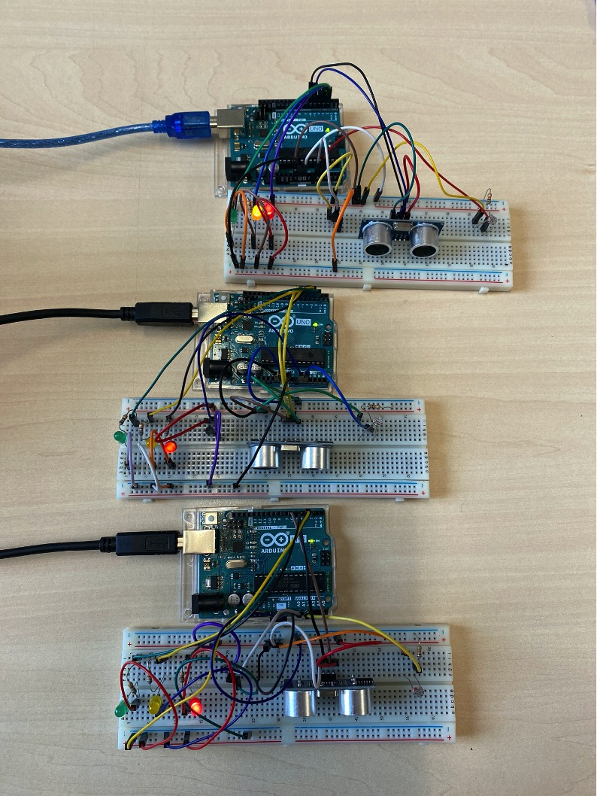

Voor een schoolproject dat ging over embedded systems moesten we met een Arduino een zonnescherm simuleren.
Deze zonnescherm kan je besturen via een Python applicatie die we hebben gemaakt. In deze applicatie kan je dingen instellen zoals hoever het zonnescherm moet in- of uitrollen. Je kan ook de zonnescherm automatisch laten in- of uitrollen bij een bepaalde temperatuur of lichtintensiteit.
Ook kan je meerdere zonnescherm tegelijk verbinden met de applicatie.
Datum: 2020
Zonnescherm project

In dit document kan je alle details vinden over hoe we het project hebben aangepakt: Project document
Github repository: https://github.com/RubenJ01/project_zonnescherm